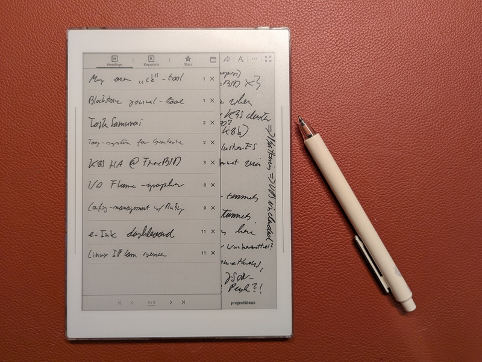
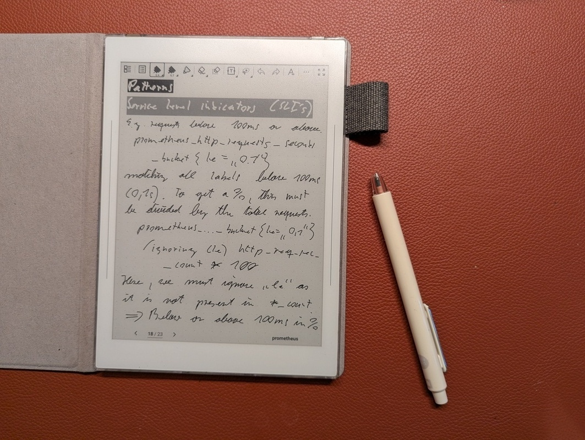

Using Supernote Nomad offline
Published at 2025-12-31T16:25:30+02:00
I am a note taker. For years, I've been searching for a good digital device that could complement my paper notebooks. I've finally found it in the Supernote Nomad. I use it completely offline without cloud-sync, and in this post, I'll explain why this is a benefit.
Supernote Nomad
I initially bought it because Retta (the manufacturer of the Supernote) stated on their website that an open-source Linux firmware would be released soon. However, after over a year, there still hasn't been any progress (hopefully there will be someday). So I looked into alternative ways to use this device.
⣿⣿⣿⣿⣿⣿⡿⠿⠿⣿⣿⣿⣿⣿⣿⣿⣿⣿⣿⣿⣿⣿⣿⣿⣿⣿⣿⣿⣿⣿
⣿⣿⣿⣿⣿⣏⠀⢶⣆⡘⠉⠙⠛⠿⠿⣿⣿⣿⣿⣿⣿⣿⣿⣿⣿⣿⣿⣿⣿⣿
⣿⣿⣿⣿⣿⠋⣤⣄⠘⠃⢠⣀⣀⠀⠀⠀⠀⠀⠉⠉⠛⠛⠿⢿⣿⣿⣿⣿⣿⣿
⣿⣿⣿⣿⡿⠀⡉⠻⡟⠀⠈⠉⠙⠛⠷⠶⣦⣤⣄⣀⠀⠀⠀⠀⠀⣾⣿⣿⣿⣿
⣿⣿⣿⣿⡄⠸⢿⣤⠀⢠⣤⣀⡀⠀⠀⠀⠀⠀⠉⠙⠛⠻⠶⠀⢰⣿⣿⠻⣿⣿
⣿⣿⣿⣿⠠⣶⣆⡉⠀⠀⠈⠉⠙⠛⠳⠶⠦⣤⣤⣄⣀⡀⢀⣴⠟⠋⠙⢷⣬⣿
⣿⣿⣿⠏⣠⡄⠹⠁⠰⢶⣤⣤⣀⡀⠀⠀⠀⠀⠀⠉⢉⣿⠟⠁⠀⠀⣠⣾⣿⣿
⣿⣿⡿⠂⠙⠻⡆⠀⠀⠀⠀⠈⠉⠛⠛⠷⠶⣦⣤⣴⠟⠁⠀⠀⣠⣾⣿⣿⣿⣿
⣿⣿⡇⠸⣿⣄⠀⠰⠶⢶⣤⣄⣀⡀⠀⠀⠀⣴⣟⠁⠀⠀⣠⣾⣿⣿⣿⣿⣿⣿
⣿⡟⠀⣶⣀⠃⠀⠀⠀⠀⠀⠈⠉⠙⠛⠓⢾⡟⢙⣷⣤⢾⣿⣿⣿⣿⣿⣿⣿⣿
⣿⠋⣀⡉⠻⠀⠘⠛⠻⠶⢶⣤⣤⣀⡀⢠⠿⠟⠛⠉⠁⣸⣿⣿⣿⣿⣿⣿⣿⣿
⣿⡀⠛⠳⠆⠀⠀⠀⠀⠀⠀⠀⠉⠉⠛⠛⠷⠶⣦⠄⢀⣿⣿⣿⣿⣿⣿⣿⣿⣿
⣿⣿⣿⣶⣦⣀⣀⠀⠀⠀⠀⠀⠀⠀⠀⠀⠀⠀⠀⠀⣸⣿⣿⣿⣿⣿⣿⣿⣿⣿
⣿⣿⣿⣿⣿⣿⣿⣿⣿⣿⣶⣶⣤⣤⣀⣀⠀⠀⠀⢠⣿⣿⣿⣿⣿⣿⣿⣿⣿⣿
⣿⣿⣿⣿⣿⣿⣿⣿⣿⣿⣿⣿⣿⣿⣿⣿⣿⣷⣶⣾⣿⣿⣿⣿⣿⣿⣿⣿⣿⣿
Table of Contents
The Joy of Being Offline
I keep my Supernote Nomad offline at all times. No Wi-Fi, no cloud sync, just me and my notes. And honestly, it's great.
With Wi-Fi off, the battery lasts about a week on a single charge (how convenient :-)).
Privacy was my main concern, though. I don't sync anything to Retta's cloud, so my notes stay mine. No one's reading or mining my stuff. Simple as that.

My Offline Workflow
My workflow is simple, only relying on a direct USB connection to my Linux laptop.
I connect my Supernote Nomad to my Linux laptop via a USB-C cable. The device is automatically recognized as a storage device, and I can directly access the Note folder, which contains all my notes as .note files. I then copy these files to a dedicated archive folder on my laptop.
Converting Notes to PDF
To make my notes accessible and shareable, I convert them from the proprietary .note format to PDF. For this, I use a fantastic open-source tool called supernote-tool. It's not an official tool from Ratta, but it works flawlessly.
https://github.com/jya-dev/supernote-tool
I've created a small shell script to automate the conversion process using tis tool. This script, convert-notes-to-pdfs.sh, resides in my notes archive folder:
#!/usr/bin/env bash
convert () {
find . -name \*.note \
| while read -r note; do
echo supernote-tool convert -a -t pdf "$note" "${note/.note/.pdf}"
supernote-tool convert -a -t pdf "$note" "${note/.note/.pdf}.tmp"
mv "${note/.note/.pdf}.tmp" "${note/.note/.pdf}"
du -hs "$note" "${note/.note/.pdf}"
echo
done
}
# Make the PDFs available on my Phone as well
copy () {
if [ ! -d ~/Documents/Supernote ]; then
echo "Directory ~/Documents/Supernote does not exist, skipping"
exit 1
fi
rsync -delete -av --include='*/' --include='*.pdf' --exclude='*' . ~/Documents/Supernote/
echo This was copied from $(pwd) so dont edit manually >~/Documents/Supernote/README.txt
}
convert
copy
This script does two things:
- It finds all .note files in the current directory and converts them to PDF using supernote-tool.
- It copies the generated PDFs to my ~/Documents/Supernote folder.
Syncing to my Phone
The ~/Documents/Supernote folder on my laptop is synchronized with my phone using Syncthing. This way, I have access to all my notes in PDF format on my phone, wherever I go, without relying on any cloud service.
https://syncthing.net/
Firmware updates
One usually updates the software or firmware of the Supernote Nomad via Wi-Fi. However, it is also possible to update it completely offline. To install the firmware update, follow the steps below (the following instructions were copied from the Supernote website):
- Connect your Supernote to your PC with a USB-C cable. For macOS, an MTP software (e.g. OpenMTP or Android File Transfer) is required for your Supernote to show up on your Mac.
- For Manta, Nomad, A5 X and A6 X devices, copy the firmware (DO NOT UNZIP) to the "Export" folder of Supernote; for A5 and A6 devices, copy the firmware (DO NOT UNZIP) to the root directory of Supernote.
- Unplug the USB connection, tap “OK” on your Supernote to continue, and if no prompt pops up, please restart your device directly to proceed to update.
The Writing Experience
The writing feel of the Supernote Nomad is simply great. The combination of the screen's texture and the ceramic nib of the pen creates a feeling that is remarkably close to writing on real paper. The latency is almost non-existent, and the pressure sensitivity allows for a natural and expressive writing experience. It's great to write on, and it makes me want to take more notes.

Conclusion
The Supernote Nomad has become an additional tool for me. By using it offline, I've created a distraction-free and private note-taking environment. The simple, manual workflow for transferring and converting notes gives me full control over my data, and the writing experience is second to none. If you're looking for a digital notebook that respects your privacy and helps you focus, I highly recommend giving the Supernote Nomad a try with an offline-first approach.
The Supernote didn't fully replace my traditional paper journals, though. Each of them has its own use case. However, that is outside the scope of this blog post.
Other related posts:
2026-01-01 Using Supernote Nomad offline (You are currently reading this)
2026-01-01 Cloudless Kobo Forma with KOReader
E-Mail your comments to paul@nospam.buetow.org :-)
Back to the main site